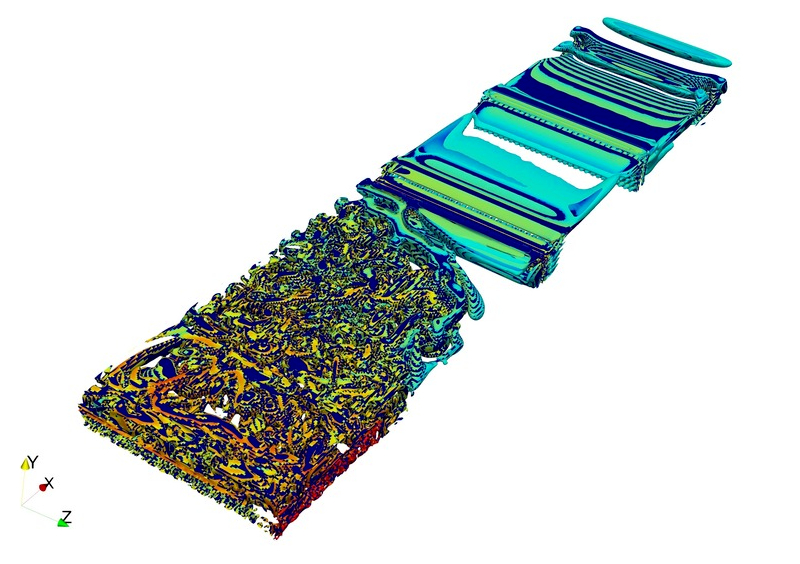

Fluid Mechanics Group
Delhi Technological University
The Fluid Mechanics Group is headed by Prof. Raj Kumar Singh, Department of Mechanical Engineering, Delhi Technological University. Our research group uses theoretical, computational, and experimental methods to investigate and analyze the fluid flow of various types.
Projects
-
A Quantitative Analysis of Machine Learning based Regressors for Pressure Reconstruction in Particle Image Velocimetry Applications
Collaborator - Manan Basu, Priyam Gupta, Tript Sharma
Particle Image Velocimetry (PIV) is an experimental method of flow visualization that establishes instantaneous velocity fields. It provides a highly accurate spatial and temporal resolution of flow characteristics compared to other conventional fluid measurement and visualization techniques. However, certain limitations are encountered, particularly due to noise that corrupts the high-resolution measurements. The instantaneous velocity fields obtained from PIV is used to evaluate pressure with the help of Navier-Stokes equations. The pressure evaluated using this method involves complex algorithms and depends highly on velocity fields, which is prone to experimental noises. With the recent developments in Artificial Intelligence, Machine Learning (ML) techniques are being used for many engineering applications. In the proposed work, we have developed a computational framework incorporating three regressors i.e., Support Vector Regressors (SVRs), Regression-Artificial Neural Networks (R-ANN), and Bayesian Networks to infer the pressure fields for incompressible fluids by training on standard datasets. The training was performed on attributes identified by feature engineering of the fluid properties. The error between the converging prediction and expected pressure fields were recorded for these regressors along with the numerically evaluated pressure. These techniques have shown reduced complexity and computation as well as overcome the drawbacks of the conventional methods.
Fig. Validation of output from best performing machine learning based regression model
-
Enhancement of Airfoil Slat Configuration using Invasive Weed Optimization framework coupled with Artificial Neural Networks
Collaborator - Priyam Gupta
This research attempts to develop an optimization scheme by integrating the Genetic Algorithm and Artificial Neural Network (ANN) - the surrogate model, which was successfully implemented to optimize Leading Edge Slat shape and configuration. The optimization model used Invasive Weed Optimization. Bezier curves were used as an aerodynamic shape parameterization method to ensure the generation of smooth-contoured slat profiles. Geometry, Overhang, Depth, and Deflection were taken as the defining parameters for each individual. These parameters were varied within a range which is 3.4% to 15% of slat chord for Overhang, -5% to 4% of slat chord for Depth, -5% to 5% of initial deflection for Deflection and the ordinate of shape control points had a variation of y+3 to y-3. The standard deviation decreases non linearly from 6 to 0.005 with a modulation index of 3. Multiple Computational Fluid Dynamics simulations were run for each individual under various operating conditions to evaluate their fitness (lift to drag ratio). The data generated from this process was used as training and test sets for the ANN. Shape control points, angle of attack, Reynolds number, and operating conditions were taken as input parameters for the neural network to predict lift to drag ratio. The developed technique showed approximately 85% improvement in the time taken and allowed the algorithm to better explore design space.
-
A Natural Evolution based Numerical Optimisation framework to enhance Airfoil-Slat Arrangement
Collaborator - Priyam Gupta
Leading Edge Slats are popularly being put into practice due to their capability to provide a significant increase in the lift generated by the wing airfoil and decrease in the stall. Consequently, their optimum design is critical for increased fuel efficiency and minimized environmental impact. This paper attempts to optimize the Leading-Edge Slat geometry and its orientation with respect to airfoil using the Genetic Algorithm. The class of the Genetic Algorithm implemented was Invasive Weed Optimisation as it showed significant potential in converging design to an optimal solution using the basic properties of seeding, growth, and reproduction in colonies. Slats being aerodynamic devices require smooth contoured surfaces without any sharp deformities, and accordingly, the Bézier airfoil parametrization method was used. It maximizes the convergence rate of the optimization process and produces practical aerodynamic shape profiles. The design process was initiated by producing an initial population of various profiles (chromosomes). These chromosomes are composed of genes that define and control the shape and orientation of the slat. Control points, Airfoil-Slat offset, and relative chord angle were taken as genes for the framework, and different profiles were acquired by randomly modifying the genes within a decided design space. For the study, Clark Y was taken as test airfoil, and the corresponding slat geometry was obtained by the MATLAB code. To compare individual chromosomes and to evaluate their feasibility, the fitness function was determined using Computational Fluid Dynamics simulations conducted on OpenFOAM. The lift force and the drag force at a constant angle of attack (AOA) were taken as fitness values. It was assigned to each chromosome, and the process was then repeated in a loop for different profiles, and the fittest wing slat arrangement was obtained. The framework was found capable of optimizing multi-element airfoil arrangements.
Fig. Velocity Contour of Initial Configuration
Fig. Velocity Contour of Final Configuration
-
Investigation of Conduit Flow past Corrugated Structures using Large Eddy Simulations on OpenFOAM
Collaborator - Ujjwal Suri, Paras Sachdeva
Methodologies, including rough-ribbed walls and particle injection, have been utilized for turbulence attenuation in the past. Screens and corrugations are yet another effective tool for reducing turbulence. The proposed investigation focuses on the application of square and hexagonal cross-sectional corrugations, which are introduced in the flow for turbulence attenuation inside rectangular conduits. Large Eddy Simulations in three dimensions were performed with OpenFOAM using a pressure-implicit solver and the standard Smagorinsky subgrid-scale model. Dampening of the spanwise velocity component and a relative increase in streamwise velocity component downstream of the corrugation was observed. The power spectral densities (PSD) of the flow upstream and downstream of the corrugation were examined and compared. A significant decrease in turbulent flow power density was observed. Furthermore, characteristics including turbulence intensity contours and isosurfaces of the Q-criterion were visualized. The results conclusively indicate a subsequent decrease in the turbulent nature of flow past corrugated structures—the below isosurface of Q criterion shown the transition of flow past corrugation submerged in conduit. The project culminated in two phases. In the first phase, the effect of employing various cross-sectional shapes was studied, and the second phase dealt with the parametric numerical study of flow past hexagonal corrugation wherein effects of various LES models, wall function, and grid resolution were studied.
Fig. Isosurfaces of Q-Criterion
-
Metaheuristic Optimization of Dual-Element Vertical Axis Wind Turbine using Genetic Algorithm
Collaborator - Priyam Gupta
This paper presents a framework for the optimization of Dual - Element Vertical Axis Wind Turbine (VAWT) Blade configurations for improvement in power generation. The multi-element nature of the turbine was specifically chosen as this configuration offers better-attached flow over a conventional single element H-type turbine. The framework was based on a genetic evolutionary algorithm, which is a metaheuristic optimization technique based on the principle of survival of the fittest. The class of genetic algorithm used was Invasive Weed Optimization. The geometry of the turbine consists of a rotor with three sets of dual-element airfoil oriented symmetrically. Effective chord length and relative chord angle were taken as modifying parameters for generating new configurations. The fitness of each individual was evaluated by performing two - dimensional Computational Fluid Dynamics Simulations. OpenFOAM was used for performing numerical simulations. Qualitative data of torque, power, total pressure, velocity, and turbulence intensity of worst and best configurations were compared. A considerable increase in power was observed from initial geometry when compared with the final geometry. The model was found ideal for optimizing multi-element VAWT configuration.
-
Design and Development of a Low Cost Smartphone-based Particle Image Velocimetry System
Collaborators - Vishesh Kashyap, Nehal Jajal, Mrudang Mathur
The components in a typical PIV system are required to be precise and accurately calibrated. However, due to the local unavailability of components and the high cost of import, very few institutions in developing countries such as India possess a PIV system. This project focuses on constructing a smartphone-based particle image velocimetry system for educational use. Using smartphone cameras and low-intensity laser diodes, established open-channel flow is visualized around a given test-body. Hydrogen bubbles obtained through the electrolysis of metal electrodes at an experimentally-obtained optimum voltage are utilized as seeding particles. An open-source MATLAB toolbox is used to track particle motion across a number of frames and obtain measurements of velocity reliably. Due to inaccessibility of any other experimental technique for validation CFD simulations were performed using the Volume of Fluid model in ANSYS Fluent and the results were compared with those obtained from experiments performed by varying camera parameters like Frame Rate, Exposure, and ISO and thus the most appropriate parameter was decided which could yield good results. Hence, the system was considered validated for further usage. The developed system is being used at Fluid Systems Laboratory, Delhi Technological University for academic teaching purposes.